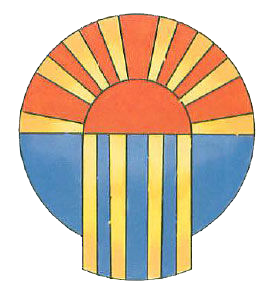
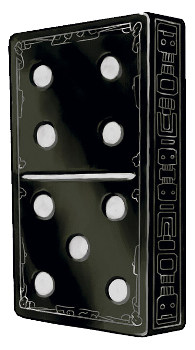

Due to its rather tumultuous history, the world of Eberron is shrouded in mystery. Empires has risen and fallen. Species gained and lost dominance, and many near planet-wide disasters have taken place. Despite all this, some information from various eras have stayed through the civilizations in the form of stories and myths, which in turn has lead to some taking the form of religions. Religions function a bit differently in Eberron than in other settings. While gods have a indisputable physical presence in other settings, it is much more ambiguous here. The gods have rarely,if ever shown up in the physical plane, and their very existence is called into question by skeptics. This being said, divine casters are a bit rarer than in other settings as well. Also as a result churches tend to be a place of guidance rather than healing, which is mostly left to House Jorasco. Some exceptions take place of course for members and friends of the church in question. This section foes into greater detail on each of the major religions, shared myths and other belief systems in Eberron.
The myth of the three dragons who created the known universe is well known across the entire world. It states that the three Wyrms, Siberys, Khyber and Eberron were siblings who worked together to create the planes that make up this universe. When they got to the material plane however, they began to disagree on how the world should function. This lead to the killing of Siberys by Khyber, and in retaliation for her brother's murder, Eberron imprisoned her sister within the coils of her own body, creating the world of Eberron, the extradimensional depths of Kyber and the ring of Siberys around the planet.
It is part of this myth that explains where life comes from as well. Siberys is believed to have directly created angels and coatls, or that his spilt blood gave birth to these creatures. Kyber is the source of devils and monsters, and sometimes blame is given to her regarding aberrations and denizens of Xoriat, although it is truly unknown where they came from. Like with her brother, Eberron is credited with the birth of the mortal races, either directly or from her blood. It is through the mixed blood of all three that gave birth to the dragons. How these individual races coexisted can be found in the world history page.
Today, this is largely regarded as merely a legend and is not treated very seriously as a creation theory. But throughout the ages, the myth did retain some permeance and many things today are named after or are in reference to the Dragons. The closest thing to a religion following them would be those who look into the Dragon Prophecy, though besides the Dragons of Argossennen, these are few.
The most widespread religion across Khorvaire, the Sovereign Host is a pantheon of gods who are typically worshiped as a whole, but individuals will follow one or two more closely due to their livelihoods. Worship also tends to be very personal and in terms of the community, practical. For instance, a town library might also serve as the temple to Aureon, the god of knowledge, while a particularly well renowned smithy may also be a shrine to Onatar, the god of creation. The clergy are typically trained in the history and rites of the religion along side their trade. They are well versed of the pantheon as a whole, but still have their focus in one appropriately in line with their profession.
It is commonly believed that the Host are in a sense all the old pantheons from various cultures, essentially treating them as the same deities, just under different names. In some faiths, particularly smaller monotheistic ones, they will use the Sovereign name, or a localized version of it. For instance, Halflings of the Talenta Plains tend to worship spirits under the leadership of a wilderness god known as Ba-li, very similar to the god of the hunt, Balinor. Other It is uncommon to believe that the Host actually created the world, but more likely that they reshaped what was already there and brought a sense of civilization to a chaotic realm. This aligns fairly well with the Progenitor myth, with one theory stating the gods are simply aspects of the Dragons themselves. The Dark Six are a related pantheon of related gods who were either cast out or abandoned by their followers for their negative connotations. It is however still common to see charms made in respect to the six to stave of their destructive effects, but worship is incredibly rare.
The afterlife is strangely not a large aspect of this religion. It is believed that all souls go to the plane of Dolurrh after death, regardless of actions in life. This belief places a strong emphasis on living a good life for its own sake, rather than for rewards later on. It is an uncommon belief that the gods will one day 'purify' Dolurrh to be a more pleasant afterlife, though this is seen as heresy by the majority of followers. A more common belief is that the souls who fade from Dolurrh ascend to a true afterlife with the gods, designating the plane as a sort of purgatory.
| god | Domain | Shrine | Symbol | Practitioners |
|---|---|---|---|---|
| Arawai | Fertility/Harvest | Markets/Farmsteads | Rangers, druids, farmers, sailors | |
| Aureon | Law/Lore | Libraries/Courts/Schools | Wizards, teachers, judges, politicians | |
| Balinor | Beasts/The Hunt | Wilds | Rangers, druids, hunters, survivalists. | |
| Boldrei | Community/Home | Community centers/Homes/Taverns | Paladins, tavern keepers, parents | |
| Dol Arrah | Justice/Light | Courts/Barracks |  | Paladins, fighters, soldiers, guards |
| Dol Dorn | Strength/War | Smithy/Barracks | Fighters, soldiers, blacksmiths | |
| Kol Korran | Trade/Travel | Markets/Docks/Stations | Travellers, sailors, merchants | |
| Olladra | Wealth/Luck | Banks/Gambling Halls/Taverns |  | Gamblers, merchants |
| Onatar | Forge/Creation | Workshops/Smithy | Artificers, blacksmiths, artisans |
A dark mirror to the Host, the Six represents destruction or the negative qualities in life. In ancient times they were worshipped along and actually a part of the Host, but were differentiated and lost followers over time. Today they can still be seen in charms or smaller shrines to at least pay reverence to them in an attempt to stave off their dominions. The only exception is The Traveller, who typically is not seen as evil like the rest, but seen as a troublemaker and is not commonly seen worshiped in the open as a result.
Little is known about the specific beliefs of sects of this religion due to its taboo nature. Droaam is the only country with open worship although it should be noted that there is a focus on the six's few positive qualities rather than just their destructive nature. Outside of worship, they are recognized by Vassals, but are only ever called upon to stave off their effects. For instance, sailors commonly leave offerings to the Devourer, if it is believed a storm will be on their route. Likewise, soldiers may have a token of the Fury in attempt to appease to her mercy.
Out of the Six, worship of the Traveler seems to be the most accepted, although still rare. The Traveler is known to be a mysterious entity, as likely to give help as they are to sow misfortune. They are oftentimes credited with large leaps in innovation, and as such, is becoming more common to see some respect given in artificer's circles. It should be noted that most of their symbols are simple wreaths or talismans made from their desired material.
While Critical Role's version of the Traveler is a lot of fun and has some similarities, they are still quite different. On one hand, Artagan can be selfish and inconsiderate, but ultimately fairly decent, if not good person who simply loves pranks a bit too much. On the other, The Traveler's ideas of a prank would be much more destructive to someone's wellbeing, behaving as they see fit without the confines of morality. A better archetype would be Loki from mythology, a constant troublemaker, although not quite evil or good, with a few positive aspects if you can work past the bad.
| god | Domain | Symbol: | Practitioners | |
|---|---|---|---|---|
| The Devourer | Nature/Destruction | sharpened bones | Sailors,travelers | |
| The Fury | Revenge/War | her visage | Soldiers | |
| The Keeper | Death/Greed | gold teeth | Merchants, assassins, politicians | |
| The Mockery | Blood/War | blood | Assassins, necromancers, soldiers | |
| The Shadow | Knowledge/Secrets | a shadowy tower | Necromancers, warlocks, mad scientists | |
| The Traveler | Change/Luck/Chaos | divination tokens | Artificers, gamblers, travelers |
The other major religion in Khorvaire, this one is much more centralized with nearly uniform churches dotting the continent. It is notable in that its deity is a composite of several souls and an ancient purifying force rather than an anthropomorphized concept. The primary faith in Thrane, it had successfully spread to other countries before The Inquisition took place, and spread nearly halted completely during the Last War after the church took leadership of Thrane. That being said the Purified gained before the Last War tended to remain devout. Many churches, especially outside Thrane teach of forgiveness and redemption more than the typical dogma of eradicating evil. Most traditional teachings preach about vanquishing evil in the world, leaving no quarter for the wicked. Much of this comes from the origins of the faith, the figurehead being a column of literal flame that speaks only to the pure of heart. This flame marks the spot a Paladin named Tir Miron and her unnamed Coatl companion who sacrificed their lives to seal away a Demon Lord who was wrecking havoc across the land. The Flame is said to be the combined souls of Miron, the coatl and the souls of the Purified of the Flame. Even with the rarity of those with even the ability to resurrect the dead, those who can that are of the faith do so very sparingly. Between the belief in the gestalt of souls that is their afterlife and having a priority on keeping the sanctity of the soul, it is a very frowned upon practice, although some exceptions can be made under extraneous circumstances.
As stated before, many members of the both the congregation and the clergy are adopting a more progressive stance regarding their place in the world. Followers of the Flame easily see a kinship with practitioners of the Host, although it irks many clergy due to its much looser structure. They also admire the similar goals of the Path of Light, despite mch ambiguity about that particular religion. Despite the general friendliness between these religions, the Purified tend to see themselves as 'correct'. They do not appreciate any veneration of the Dark Six, believe all practitioners of the Blood of Vol are evil, and are the only organization that takes the Lords of Dust seriously anymore. These beliefs can be exemplified in the subset known as the Flame Keepers. Originally part of the elite and guard forces of the Silver Flame, some of the more traditional minded clergy and military went against newer orders and continued to behave in a zealous manner. Due to the repercussions of the war, The Church has been unable to reign in these rogue forces, much to the chagrin of nearly the entire continent. These forces do not subjugate haphazardly, but have been reported to strong arm smaller communities under the prospect of protection. To their credit, very little supernatural activity has happened under their watch.
The leader of the Church is known as the Speaker of the Flame. When one reaches around the age of 20 or dies, a new one is chosen from a selection of children who are able to interpret the word of the Flame. This selection is very careful due to the belief that the Demon Lord that was sealed away is able to communicate through the flames, so that only the pure of heart may be chosen for being unaffected. Unchosen are typically kept as additional advisers or gain admittance to the clergy. The current Speaker is Jaela Daren, the first in nearly a generation. The young Half-Orc was chosen a bit older than is typical for the Speaker role, but with a several decade absence of one, she was gladly put in place. It should be noted that the absence was after the monarchy of Thrane was overthrown by the populace towards the beginnings of the Last War. The royal family traditionally ruled alongside the church, similar to medieval England, but they did not seem to hold to the same tenants as the populace and lead very hedonistic lives. Being drug into a war did not help their matters and the Church rose as the governing party for Thrane. Unfortunately, by this time the war was in full swing and Thrane, like every other country did what they had to do to survive.
The Blood of Vol is a complicated religion to put it mildly. There are numerous misconceptions about the religion as a whole and especially towards the Seekers of the Divinity sect, both due to the actions of the Order of the Emerald Claw, and both sects' views on life, death and undeath. Said to have been founded by Erandis d'Vol of the extinct House Vol, this religion rejects the concept of death and the afterlife in favor of each individual ascending through their own spark of divinity. In this pursuit, some have performed deeds of questionable morality in order to either expand their life or even achieve immortality. It seems much of this plays from a fear of the nature of Dollurh, which practitioners believe is the only true afterlife, and must be avoided at all costs. Due to its sordid past, it is not typically practiced openly, except in Karrnath, but under more subtle methods, most of the time under charity or other work that alleviates the pain that life gives as it were. Seekers have a much more liberal view on the undead than most others typically would, seeing the use of otherwise rotting husks as simply a resource to use. It is also through their magic specialties that Karrnath was able to develop their slightly intelligent undead legions, utilizing bodies, but without tainting the souls. There are rumors of some higher ranking officials within Karrnath and the religion being intelligent undead like vampires or mummies. Facts regarding this are unknown at large, but it is commonly believed that this sort of undead corrupts the soul, and therefore one's divinity, so it seems like an unlikely rumor at best. The Order of the Emerald Claw however, seems to love using necromancy in all its forms. Claiming to be under the orders of Erandis Vol herself, this sect seeks to remake the world into an undead paradise. Largely considered a terrorist organization, this relatively new group has orchestrated numerous attacks on settlements across Khorvaire. After a rather destructive battle against Thranish templars, their numbers seem to have dwindled, but many fear that they are simply biding their time and slowly rebuilding.
Not an actual religion, the cults are so named due to the common belief that their worship relates to source of the world's evil, Kyhber. In actuality, very few, if any worship the Dragon herself, with most followings being small sects under a Demon Lord whose bonds are loosening, an abomination that has made contact with mortals, or in some cases, a fledgling, but powerful fey or celestial being. It would be ignorant to state that all who fall under this banner are evil, but due to some lingering paranoia regarding the War and from sects of legitimate threats, most practice stays secret, unfortunately compounding those fears.
This religion from the Kalashtar across the ocean is a bit different from other religions. They do not worship or even recognize a god or higher power or even follow a particular set of rules. This faith states that everyone and everything are connected, even the good and evil in the world, and that by improving yourself you can improve everything around you. One of the chief goals of the religion is to purify Dal Quor from the nightmare spirits that currently plague it. Since the Kalashtar can naturally tap into their own psionic abilities, they have dedicated much of their time in meditation and self-reflection to combat these psychic demons. After some immigration to Khorvaire, other groups have taken on the faith as well, but as they require much, much more training to even attempt the most basic of psionic abilities, many have focused on making the world around them better more directly. Many individuals dedicate their time to helping others through acts of charity and kindness. The Kalashtar Enlightened seem to find this agreeable, seeing as anybody can find or even create their own role to play.
One of the few religions where the object of worship is physically present, the Undying Court is a bit odd, especially in relation to the faiths Khorvaire. In Arenal, the Elves have mastered a form of necromancy that utilizes positive energy, creating beings of light and life rather than darkness and death. These spiritual beings are forged from the souls of those who perform great deeds in the service of Arenal, otherwise they would typically reincarnate. The Court typically gives advice and information to those who ask, but indirectly rules, letting the still living Elves govern day to day matters. Their religious aspect mostly comes into play because they can decide what happened to an Areni when they die. If they performed valiantly, they are offered a position on the Court, simply reincarnated, or in extreme circumstances, removed from the cycle entirely as punishment. They have some similarities with the Silver Flame in that they both seek to eradicate evil from the world and are often the first line of defence against outside forces, although their use of undead has earned the ire of the Church.
Being direct decedents of the Tairnadal Elves, the Elves of Valenar also practice a form of ancestor worship. Being of a different culture however, they do not follow the Court, but rather their direct ancestors. Their tenets run along the lines of following in the footsteps of a great hero, or questioning what past experts might have done in relevant situations. This faith has also allowed non-elves to join, although higher ranking individuals still run along family lines. Drow of Arenal follow along with the Undying Court, but those who have been raised in Xen'Drik follow a similar path to the Tairnadal, though from a less dogmatic perspective. Many also do not believe in reincarnation as what just naturally happens, although some individuals have come back for a purpose. Elves throughout the rest of Khorvaire tend to follow the local religion like most other citizens, but tend to incorporate the concept of reincarnation to them. The secular Elves that still believe in reincarnation still show some respect to the Court despite the lack of worship, seeing them more as a collection of ancestors than a true deity.
It is believed that the souls of non-elves that go to Dolurrh eventually fade away and reincarnate at random, so far removed from their previous life that they are an entirely new being. Sometimes this new life is an Elf and they will then be part of the normal Elven life cycle. As mentioned under new options, an Elf can live to around 200 years and when they die, they are quickly reincarnated into a new Elf for a few generations. After this, they are either made into an undying, who later on may be put back in the cycle 'fresh' or invited into the court, 'restarted' as a new Elf, or rarely, cast off entirely into Dolurrh. Reincarnates typically only have fuzzy memories of their previous lives but are frequently stated by those who may have known both to have the same core personality traits.
Another faith that is not a religion in the strictest terms. All Druids venerate various natural spirits, or sometimes fey beings, where they get their powers from. But each group may favor certain spirits over others, or have a particular agenda in mind for their duties. In Khorvaire, most Druids are in the farthest reaches of the Shadow Marches, Q'barra, or the Eldeen Reaches and the oldest have Orcish or Goblin roots. Today there are not too many Circles left with many people joining civilization and industry, as of now, they do not seem to be in danger of dying out, but that day may come sooner rather than later. It should also be noted that while the title 'druid' is used for followers, this does not mean that one must be that class. Others like paladins, sorcerers, warlocks, and even bards are fairly common among the circles.
| Circle | Region | Purpose |
|---|---|---|
| Ashbound | Wilds across Khorvaire | To protect and reclaim the wildlands. |
| Children of Winter | Mournlands | Maintain the balance of life and death. |
| Gatekeeper | Shadow Marches/Q'barra | Hold against extraplanar threats. |
| Greensingers | Eldeen Reaches | Mediate between mortals and fey. |
| Wardens of the Wood | Any large wildlands near cities or towns | Serves as guides and wardens of the forests |